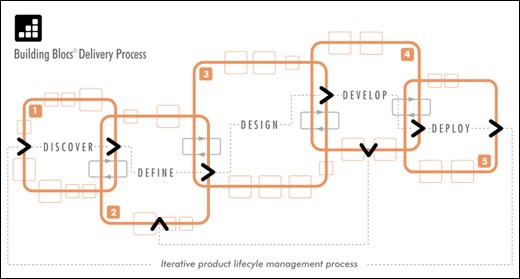

Can any company guarantee 100% success rates for every software development and design project it tackles? Of course not, but a company can set certain guidelines to minimize common pitfalls and increase their success rate by following proven methodologies like Neubloc's Building Blocs method for software design and development.
Neubloc's approach is to build with multidisciplinary teams in mind and tailored to include:
1. Business analysis
2. User experience
3. Engineering
4. Quality assurance
Neubloc uses the 5-Phase Building Bloc Method with phases shown below:
The discovery phase maps out:
1. Vision and project scope
2. High-level requirements for the new version of the project
3. Baseline assessments for the current systems
4. Resource planning
These phases are outlined in the chart below:
This phase revolves around documentation:
1. Task analysis and mapping
2. Usability analysis and user interface concepts
3. New content inventory
4. Architecture document
Task flow analysis assesses which data is needed by users, how and when users can manipulate that data and how to most intuitively architect task flows. There are two goals to achieving this:
Usability analysis helps identify new content and create User Interface (UI) concepts to incorporate current information architecture, user interface metaphor and primary tasks.
The new interface design complies with the organization's:
Conceptual designs are communicated via wire frames that control a basic model of what the product's appearance and user interaction.
This consists of identifying and defining content and services needed to meet user requirements as well as how these requirements can easily be updated to maintain freshness. Old content inventories can be migrated to the new system to begin the content migration plan process.
The Neubloc engineering team next focuses on creating a robust software/system architecture to handle designated "titles" while focusing on these elements:
At the end of the Define Phase, the project is ready to be moved offshore.
To ensure a smooth offshore transition, it is important to agree upon the following:
The project slides into the Design Phase and off shoring (if desired). More engineers and Business Analysts are brought in to reduce time. The Usability Engineers finalize obscure wireframes and collaborate with UI/Graphics Engineers on screen mock-ups.